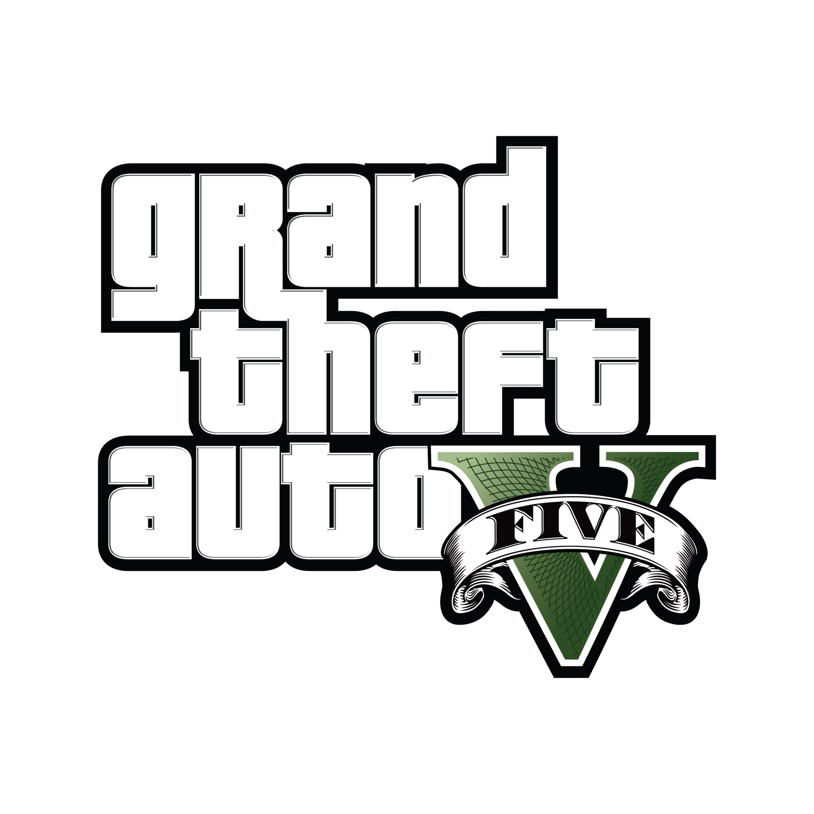
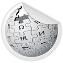
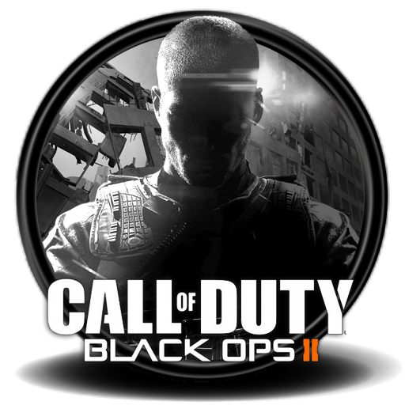
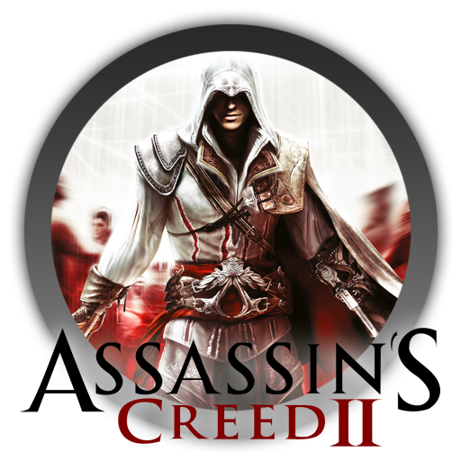
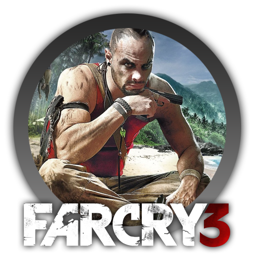

Juegos
| Nombre |
Compañia |
Valoracion |
Icono |
Wikipedia |
| GTA |
RockStar Games |
9.6 |
GTA es una saga con más de 15 títulos ambientados en diferentes escenarios. En todos los casos, un criminal realiza distintas misiones a cambio de dinero. Sus encargos suelen ser asesinar personas, secuestrar hombres adinerados, robar coches, asaltar bancos, etc. |
 |
| Call Of Duty Black Ops 2 |
Treyarch |
9 |
Black Ops II es el segundo juego de la saga Call of Duty en presentar la futura tecnología de la guerra, y el primero en presentar historias de ramificación impulsados por elección del jugador, así como la selección de armas antes de comenzar las misiones del modo historia. |
|
| Assasin Creed II |
Ubisoft |
9.4 |
Una épica historia de familia, venganza y conspiración ambientada en la Italia renacentista, tan hermosa como despiadada. DESCUBRE EL NUEVO ASSASSIN'S CREEDGuerras que estallan, reinos que caen. Encarna a despiadados guerreros; saquea con tu tripulación; explora y sobrevive en un entorno hostil. |
|
| Watch Dogs |
Ubisoft |
8.7 |
Es un videojuego de acción de estilo sandbox desarrollado por Ubisoft para PlayStation 3, PlayStation 4, Xbox 360, Xbox One, Wii U y PC que se desarrolla en una realidad paralela donde hay una ciudad gestionada totalmente por un sistema global bajo las órdenes de grandes corporaciones. |
|
| Far Cry 3 |
Ubisoft |
9.2 |
Es un juego de acción y supervivencia en el trópico, creado por Ubisoft Montreal que se lanzó el 29 de noviembre del 2012 para PlayStation 3, Xbox 360 y Microsoft Windows. |
|